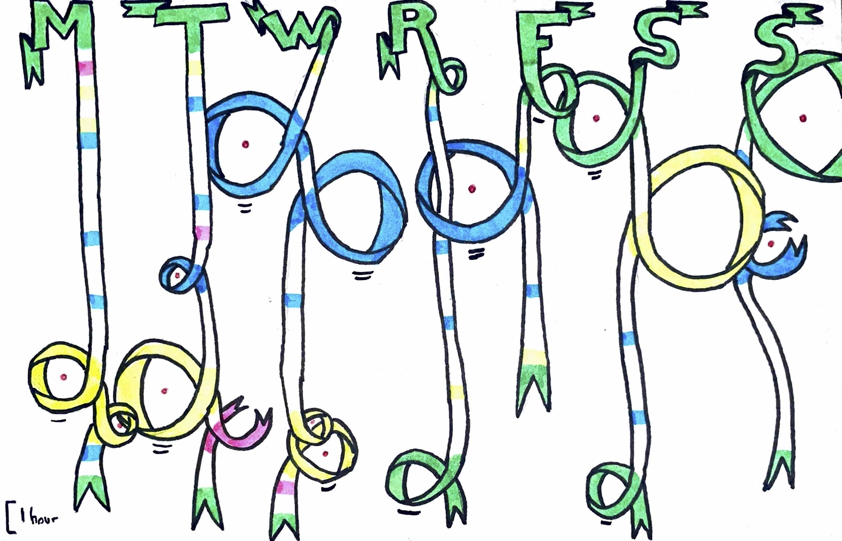
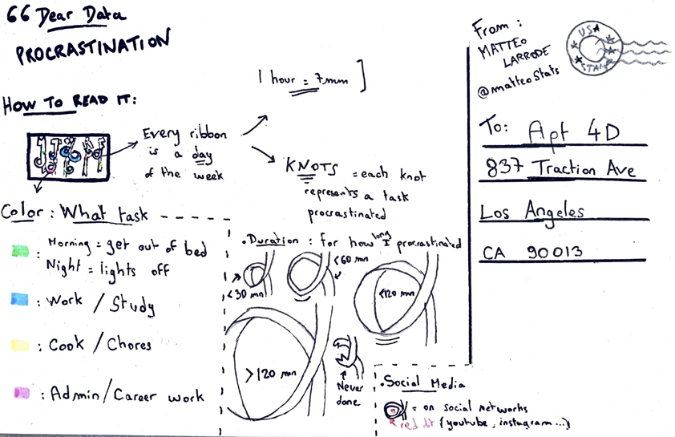

library(tidyverse)
library(janitor)
my_procras <- readr::read_csv("dataset.csv") %>%
clean_names()Matteo’s Dear Data
Data Wrangling
I cleaned and simplified the data I had collected throughout the week.
I then cleaned the data:
grouped some tasks
binned procrastination times into categories
# group some tasks to simplify visualization & bin procrastination times into 5 categories
my_procras_final <- my_procras %>%
mutate(task = case_when(task %in% c("cook", "tidy") ~ "chores",
task %in% c("career", "admin")~ "admin+",
TRUE ~ task))%>%
mutate(procrastinat_bin = cut(procrastinat,
breaks = c(0, 1, 30, 60, 120, 200),
right = FALSE,
labels = c("None", "<30", "<60", "<120", "120+")))Here is a glance at the final table I worked with:
# A tibble: 51 × 5
day time task social procrastinat_bin
<chr> <time> <chr> <dbl> <fct>
1 Monday 10:00 out_bed 0 None
2 Monday 10:30 admin+ 0 None
3 Monday 10:45 chores 0 None
4 Monday 12:15 chores 0 None
5 Monday 12:45 work 0 None
6 Monday 15:30 work 0 None
7 Monday 17:10 work 0 None
8 Monday 21:30 chores 1 <60
9 Monday 22:45 chores 1 <30
10 Monday 23:30 work 0 None
11 Tuesday 01:30 lights_off 0 None
12 Tuesday 08:00 out_bed 0 None
13 Tuesday 08:30 chores 0 None
14 Tuesday 09:30 work 0 None
15 Tuesday 13:00 work 0 None
16 Tuesday 14:15 admin+ 0 None
17 Tuesday 16:00 work 1 <30
18 Tuesday 20:00 chores 1 <120
19 Tuesday 22:00 admin+ 0 <NA>
20 Wednesday 01:30 lights_off 0 None
# … with 31 more rowsVisualization


Explanation of the graph
Space at the back of the card is quite limited so here is a more detailed explanation of the visualization.
1) Representation of time
Time is represented as a ribbon: 1 hour = 7mm.
Every day is a distinct ribbon that starts when I wake up and ends when I turn my lights off and decide to fall asleep.
Note: Sleep separates days of the week here, not time. Therefore, procrastination that occurs before going to sleep, even past midnight is counted as part of the previous day.
2) Tasks
Throughout the day, I have counted and represented the moment I decide that I need to start a task. Here is the list of the tasks and colors used to represent them.
| Task | Colour |
|---|---|
| Get out of bed (morning) / Lights off (night) | Green |
| Work or study | Blue |
| Cook or tidy up | Yellow |
| Administrative task or work on career (e.g. email, application, cover letter) | Pink |
When the task is started straight away, it is represented as a simple line on the ribbon. However, when it postponed, the ribbon takes its colour.
3) Procrastination
To represent time lost during the day to procrastination, I chose to represent it as a knot in the time ribbon. The knot starts at the time I decided to start the task, and ends when I finally started the task. Therefore, the ribbon is shortened by procrastination: if one hour is spent procrastinating, it is an hour that will NOT be represented by the ribbon.
There are five types of knots:
5mm diameter: procrastinated for LESS THAN 30mn
10mm diameter: procrastinated for more than 30mn but less than an hour
20mm diameter: procrastinated for more than an hour but less than two hours
30mm diameter: procrastinated for more than two hours
open: did not start the task during the day
I wanted to represent procrastination in a negative light, as a time waster that shortens my days. Knots represent procrastination exactly how I wanted because they actually shorten the ribbon that represent my time of activity during the day. However, procrastination can seen in another, more positive, light. It is a way to relax and maybe make my ‘active’ time more productive. This positive side is not represented in this graph.
Findings
Here are some findings of this week of data collection.
1) Intensity of procrastination
The week seems to be divided in two parts. Knots become larger and more numerous from Monday through Wednesday. Then, Thursday has very little procrastination, similarly to Monday. And, in a similar fashion as during the start of the week, procrastination gradually increases again, with a peak on the weekend.
2) Tasks procrastinated
The nature of tasks delayed by procrastination changes throughout the week. During the week-end, the biggest difficulty is clearly to get out of bed! A common occurrence throughout the week is that social networks are a major factor in my procrastination.
4) Social media
Knots represented with a red dot mean that the procrastination time they represent has been spent on social media for the most part.